Озера Київщини. Озера Киевщины.

Одними из удивительных мест для прогулок, пикников, походов и отдыха на природе в Киеве и Киевской области являются уникальные естественные и искусственные, парковые и лесные озера Киева. В этой статье мы попытаемся вкратце описать каждое из озер Киевщины. Здесь ты узнаешь о таких озерах, как Министерское (Министерка), Вербное, Тельбин, Синее, Тяглое, Горащиха, Хома, УТОГ, Голубое, озеро в Горенке и озера Красный Хутор.
Красивые озера Киевской области
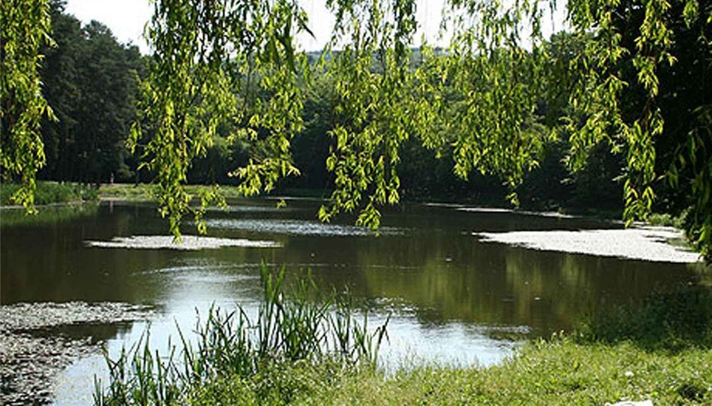
Одними из основных достопримечательностей Киевщины, которые включены в программы туров по Киеву и киевским окрестностям, являются озера. Красивейшая природа и жемчужные озера будто бы утопают в ней. В этих местах можно действительно отдохнуть по-настоящему. Особенно у киевлян это взято за правило, как только наступает какой-нибудь праздник, тысячи жителей Киева компаниями и семьями направляются на отдых к озерам, чтобы устроить пикник на природе. Но и для приезжих отдыхающих, эти места в будни дни придутся по душе. Ведь озера в этих местах очень чистые, в них можно купаться, не боясь аллергенных реакций организма или подхватить какие-нибудь болезни. За этими водоемами следит экологическая служба области, регулярно проводятся очистные работы. Именно здесь можно хорошо порыбачить, потому что эти места изобилуют рыбой. Некоторые из озер имеют песчаное дно, а некоторые (касается естественных озер) каменистое дно. Особенно хороши эти места летом, когда вокруг зелень, поют птицы, а воздух пронизан запахами природы. Так какие же озера в Киевской области являются одними из самых приемлимых для купания и рыбалки? Самые интересные озера Киева, где можно отдохнуть, Министерское озеро, Вербное озеро, Озеро Тельбин, Синее озеро, Тяглое озеро, Озеро УТОГ, Озеро Горащиха, Озеро Хома, Голубое озеро, Озеро в Горенке, Озера Красный Хутор.
Министерское озеро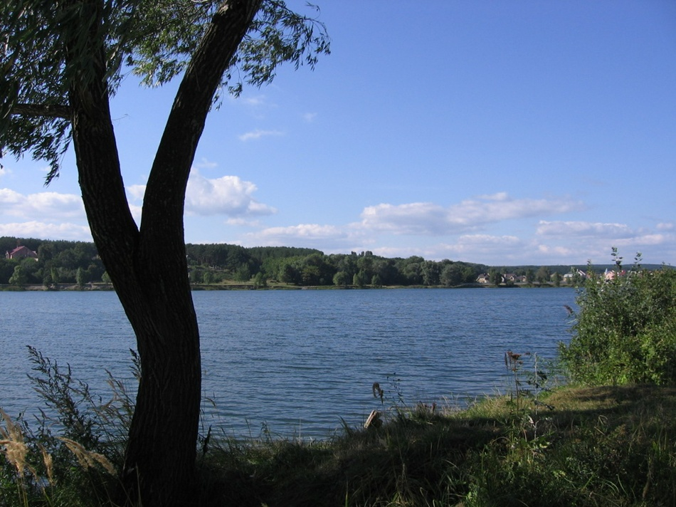
По праву одним из интереснейших озер Киева является Министерское озеро (глубина достигает 14м). Находится от Киева в стороне Вышгорода на расстоянии 11 км. Доехать можно сюда маршрутками и автобусами в течении 20 мин.
Это озера для любителей чистых и аккуратных пляжей, имеет песчаное дно, оборудовано пляжами с местами для загарания и переодевания. Прозрачная вода озера не перестает удивлять не только приезжих, но и самих киевлян. Раньше большая часть пляжа была огорожена и было не очень много места для желающих здесь искупаться, но сейчас весь пляж полностью в распоряжении отдыхающих. В основном благодаря специальным водорослям растущим на дне этого озера, вода очищается и дополнительных мер для ее очистки не требуется. Здесь можно как порыбачить, так и покупаться, устроить шашлык на природе, поиграть в бадминтон. Здесь также присутствуют различного рода атракционы, лодки, спортивные площадки.
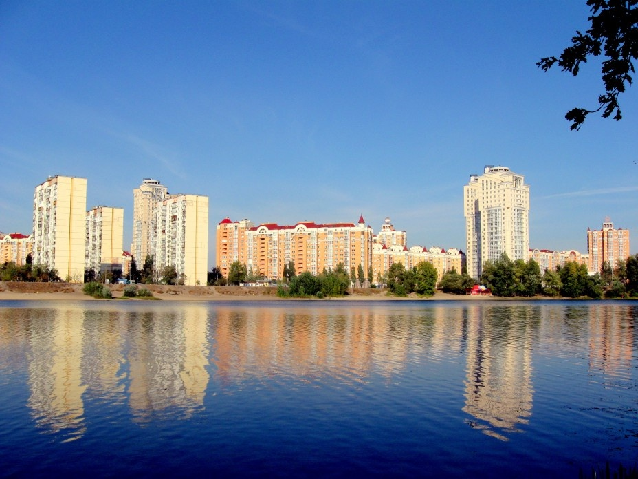
Желающих отдохнуть и покупаться в самом Киеве (Оболонский район) очень обрадует очень красивое Вербное озеро. Что очень примечательно, это озеро подпитывается шестью источниками подземных вод. Именно поэтому вода здесь чистая, насмотря на то, что озеро находится в черте города. Глубина озера составляет 22м. Здесь водится несколько видов рыб, которые занесены в Красную Книгу. Также обитают два вида черепах и несколько видов диких уток. Есть конечно же и недостатки. Хотя дно и песчаное, но песок не очень чистый. Также к недостаткам можно отнести то, что места для отдыха не оборудованы для пикников. К большим плюсам можно отнести кафешки, пляжи, зеленые насаждения вокруг озера. Такое ощущение как-будто бы гуляешь по берегу лесного озера. Здесь есть места и для любителей зимнего отдыха. Каждую зиму, когда вода замерзает, здесь организовывают каток. В дальнейшем мэрией города планируется обустроить это место для отдыха. В планах стоят следующие работы: очистка песка, закупка лежаков и зонтиков, размещение атракционов.
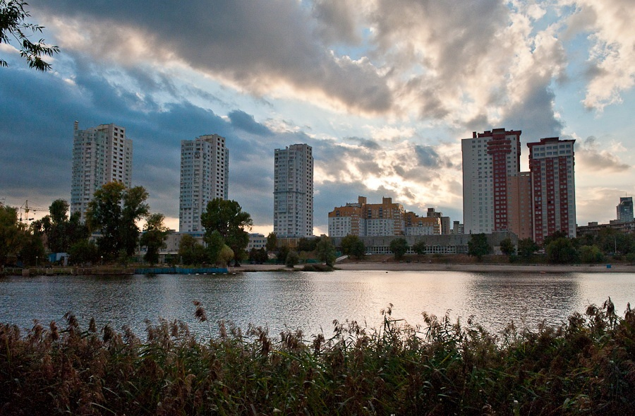
Это озеро находится посреди жилых массивов города Киев и имеет буммерангообразную форму. Является историческим озером, которое впервые упоминается в 1654г и ранее носило название Тербин. Оно расположена вдоль жилый массивов Русановка и Березняки левого берега Киева. Периметр озера составляет около 2-х км. Есть дикие берега этого озера, а есть окультуренные. Окультуренная часть составляет около 700м.
В настоящий момент здесь можно покупаться, вода здесь чистая. Озеро Тельбин является излюбленным местом киевских рыбаков и это неудивительно, поскольку здесь водятся карп, карась, сазан, плотва, окунь в изобилии. На окультуренной части озера обустроены места для отдыхающих зонтиками, шезлонгами, работаю всевозможные аттракционы. Многие киевляне приходят сюда семьями и компаниями друзей, чтобы отпраздновать какой-нибудь праздник или день рождения.
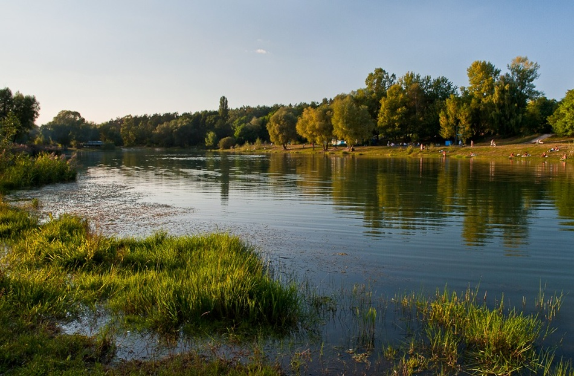
На территории города Киева около проспекта правды, расположилось Синее озеро. Несмотря на то, что оно расположено в черте города, оно не загрязнено, а местные жители утверждают, что вода здесь имеет целебные свойства. Сюда отдыхающие в основном не едут отдыхать. Здесь основной публикой местного пляжа являются сами местные жители. Хотя озеро имеет небольшие размеры, здесь достаточно много рыбы и утром и вечером здесь можно наблюдать много рыбаков за своим любимым занятием. По данным 2002 года, здесь водится 12 видов рыб: плотва, карась, окунь, щиповка, щука, красноперка, верховка и т.д.
Поэтому если ты не любишь слишком людные места отдыха, а хотел бы побывать в узкой компании организовать пикник или побыть в одиночестве у водоема, тогда тебе в это место.
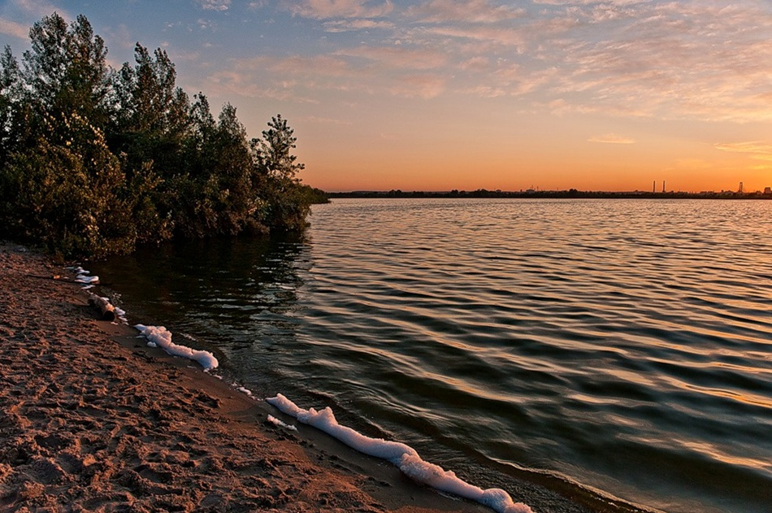
Озеро Тяглое - глубоченное озеро находится в Дарницком районе Киева. Считается одним из самых глубоких озер Киевской области. Глубина его составляет 32 м. Оно находится на территории заброшенного песчаного карьера. Ранее оно не было таким глубоким, но из-за строительство Харьковского массива, со дна озера выгребали песок, поэтому оно стало таким глубоким и широким. Вода здесь чистая и пригодная для купания. Глубина в озере резко понижается с самого берега с резким понижением до самого дна. В основном это озеро окружено дикими песчаными пляжами. Этот водоем также является подходящим местом для рыбалки. Особенно рыбаки любят практиковать здесь зимнюю рыбалку, когда при высоких морозах вода здесь замерзает. Здесь ловятся пескари, окуни внушительных размеров, щука, карась.
В общих чертах это озеро нелучшее место для культурного отдыха, но для вылазок на пикники "дикарем" и на рыбалку это подходящее место.
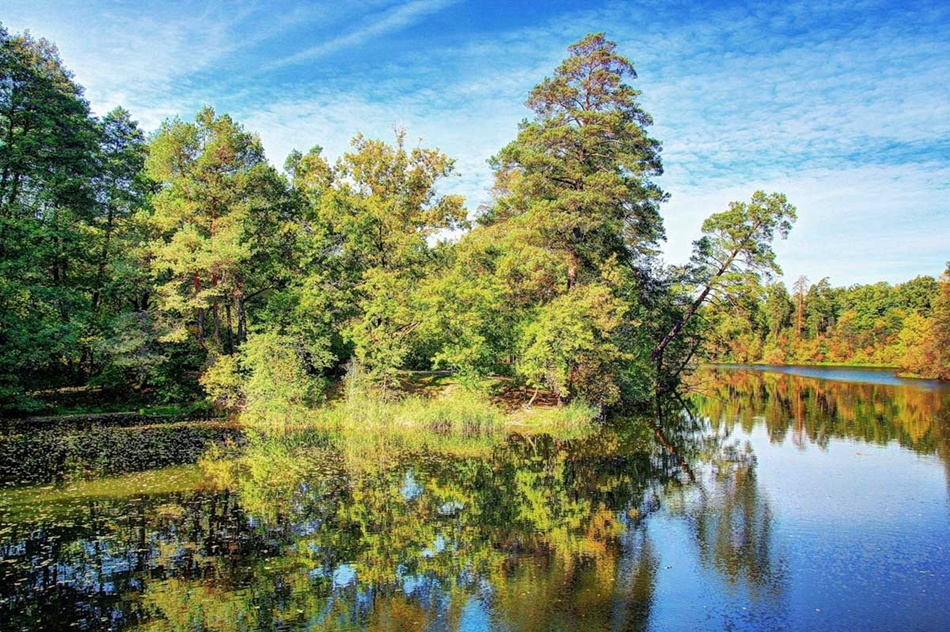
Озеро Горащиха считается прудом и расположено на территории Пуща-Водицкого леса, является единственным озером, которое рекомендовано санстанцией к купанию в Пуща-Водице. Длина этого пруда составляет чуть больше 1-го киллометра, ширина 120м. Оно оборудовано аккуратными пляжами, здесь есть все удобства для того, что бы провести незабываемый отдых. Пляжи оборудованы шезлонгами и зонтиками, есть кабинки для переодевания. Желающие не только покупаться, а и побродить по лесу, найдут также себе занятие. Озеро окружено красивым лесом. Через озеро перекинут деревянный мост, что позволяет с легкостью перебраться с одного берега на другой. В самый разгар, в летний сезон здесь полным полно отдыхающих, особенно это озеро явяляется излюбленным местом киевлян, которые хотели бы отдохнуть от трудовых будней, от жизни в гигантском мегаполисе.
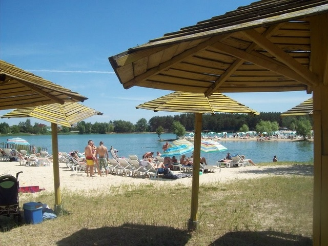
Озеро Хома расположено возле сла Зазимье. Это находится в стороне Бровар в 20 киллометрах от Киева. Чистая вода и удаленность от города делают это озеро уникальным для выезда на своем транспорте. Но сюда можно добраться и общественным транспортом автобусом № 320 или маршруткой № 328. Здесь благоустроены пляжи песчаными бухтами, шезлонгами, навесами и зонтиками. Для любителей по плавать на воде, здесь сдаются на прокат лодки и катамараны. Недалеко от пляжа можно побывать в здешнем достопримечательном месте - развлекательный комплекс "Рыбалка".
Для рыбаков также здесь находится занятие. Разновидностей рыбы здесь немного, зато рыба водится в большом количестве.
Остаться с ночовкой на рыбалку на этом прекрасном озере или просто на ночной пикник, то что надо веселой компании друзей.
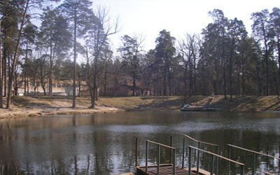
Озеро УТОГ - великолепное место для проведения отдыха, для тех кто желает провести свободное время подальше от городской суеты. Расположено на территории Пуща-Водица (1-я линия), окружено деревьями и другой растительностью. Здесь находится очень хороший песчатный пляж, который принадлежит спортивно-развлекательному комплексу УТОГ. С другой стороны озера находится дикий пляж, там отсутствует песок. Это озеро не очень подходящее место для рыбалки, но для культурно-массового отдыха является подходяим местом. Максимальная глубина озера составляет 4 метра. Добраться сюда из Киева совершенно несложно, просто садишься и едешь на трамвае № 12 из Подола. Сюда частенько приезжают громкие, большие компании киевлян и жителей близлежащих населенных пунктов, чтобы провести уикэнд или какой-нибудь праздник.
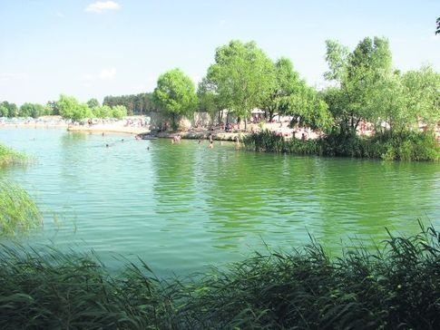
Озеро Голубое - считается самым красивым озером в Киевской области. Что здесь самое интересное, что озеро необорудовано песчаными пляжами, они здесь ненужны, поскольку здесь и так везде присутстсвует чистый песок. Бирюзово голубоватый оттенок и прозрачность воды делаеют это озеро очень красивым. Для проведения пляжного отдыха этот водоем подходит как нельзя кстати. Берега здесь довольно-таки широкие и пологие. Здесь летом нет "живого" места на диких пляжах, поскольку водоем является излюбленным местом местных жителей, да и киевляне с удовольсвием выбираются сюда, чтобы отдохнуть, пожарить шашлык, покупаться. Озеро находится в селе Подгорцы в Обуховском районе. Сюда обычно добираются из Киева либо своим транспортом, либо маршруткой от станции метро "Выдубичи". Поэтому если ты хочешь совместить красоту природы с пляжным отдыхом, то это озеро наверное лучшее место для этого.
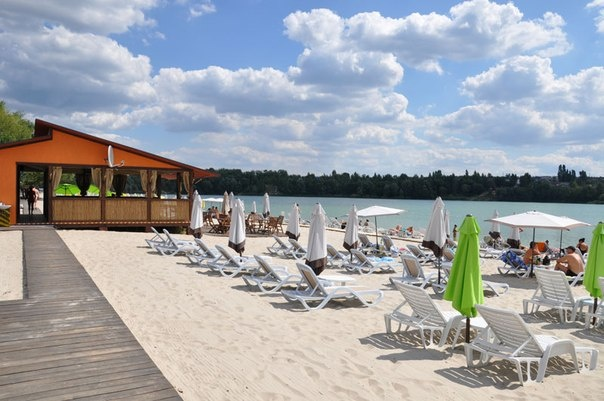
Озеро в Горенке - одно из лучших озер для культурно-массового отпуска, отличное место для того, чтобы покупаться, позагарать, порыбачить. Оборудовано песчаными пляжами, кафешками, лежаками и зонтиками. Вода здесь чистая, поэтому купаться здесь можно не опасаясь похватить инфекцию или аллергию. Находится этот водоем на территории бывшего карьера, поэтому он достаточно глубок. Несмотря на то, что водоем искусственный, здесь полным полно рыбы, что в большей степени и заманивает сюда рыбаков. Сюда лучше приезжать в будни дни, поскольку на выходных здесь очень много отдыхающих и негде развернуться. Чтобы сюда добраться, тебе достаточно попасть к станции метро Киева под названием Нивки и общественным транспортом примерно через полчаса ты будешь на месте. Далее тебе придется пройтись немного пешком.
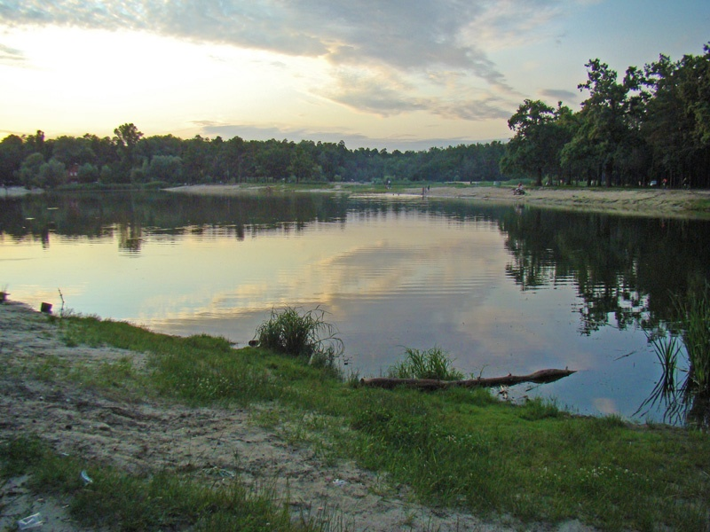
Озера Красный Хутор - здесь по-настоящему можно развернуть шикарный отдых. Два красивейших озера! Хоть озера и считаются дикими, но здесь имеются два оборудованных песчаных пляжа. Для желающих остаться с ночовкой или провести отпуск, здесь можно снять частный домик в дачном поселке, который находится неподалеку. Тихое и уединенное место находится далеко от городской суеты и забот. Здесь ощущается прикосновение дикой природы, легкое дуновение свежего ветерка и чистая водичка. Эти озера находятся в направлении Житомирской трассы. Чтобы сюда добраться своим транспортом, необходимо ехать по Житомирской трассе и у села Мрия буедт поворот направо. А если добираться общественным транспортом, то от станции метро "Святошино" можно добраться на автобусе. Если ты хочешь отдохнуть подальше от города, то эти озера очень подходят для уединенного отдыха.